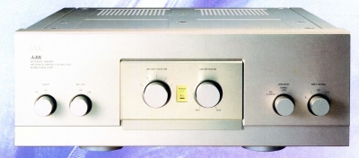
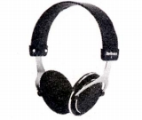
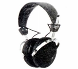
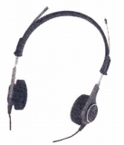
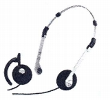

DIANGO（ジャンゴ）/NEC（エヌ・イー・シー）
1899年創立の日本電気株式会社から1953年独立したラジオ事業部、新日本電気（後の日本電気ホームエレクトロニクス）の製品群。1970年代にはDIANGO（ ジャンゴ）のブランド名でオーディオ分野に参入していたが、当時の製品について管理人は特に記憶に残っていない。オーディオ関連では1983年にNECに名称を改めてからのアンプ(A-10シリーズ等）やCDプレイヤーが記憶に残っている。またゲーム機（PCエンジン等）の開発も行っていた。ただし現在では会社は日本電気グループの再編に伴い、業務をいくつかの会社に分散し、2002年に完全に消滅している。オーディオ関連については、オーセンティックに引き継がれた。（オーセンティックは2010年自己破産しております。）

ヘッドフォンについては、一応発売していたが、デザイン・機能に特徴がないOEM調達のモデルばかりだった。1981年頃、DIANGO（ ジャンゴ）時代の製品をNECブランドで引き継いだが、メーカーの方向性がアンプ及びＣＤプレイヤーに傾いていたため、1980年代半ばに販売をやめたようだ。
�T.DIANGO（
ジャンゴ）時代の製品（ただし現時点で判明している機種はNECブランドに引き継がれた）
エレガのOEMとおぼしき製品だった。
（動電全面駆動型） AUH-15


（左 AUH-10 右 AUH-15)
�U.NEC時代の製品
ソニーのMDR-3系統の小型軽量機。


（左 NSH-80 右 NSH-83)